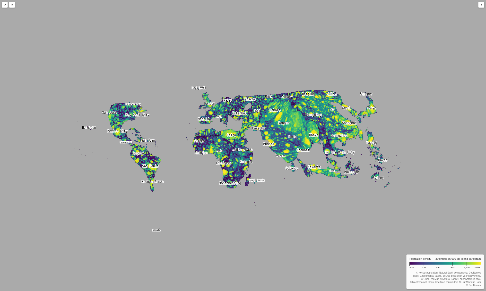
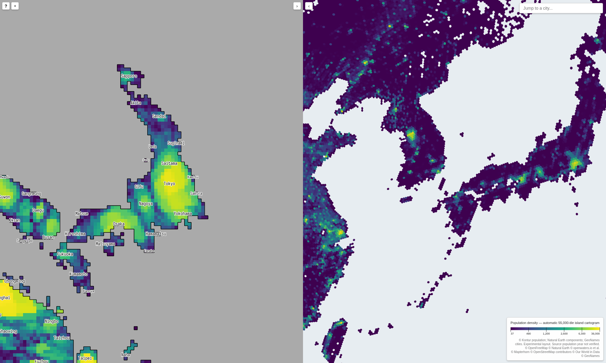
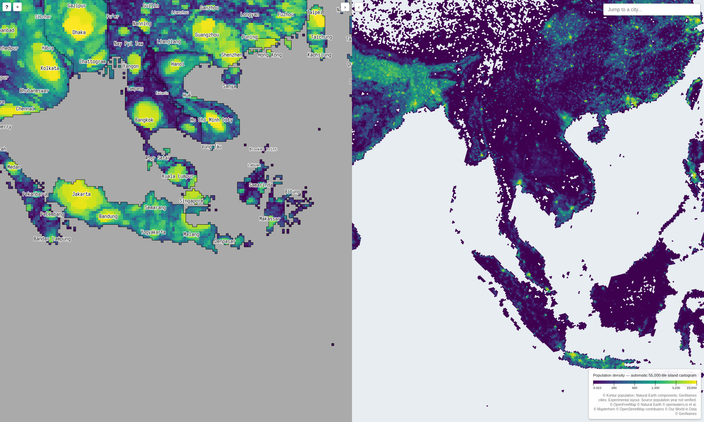
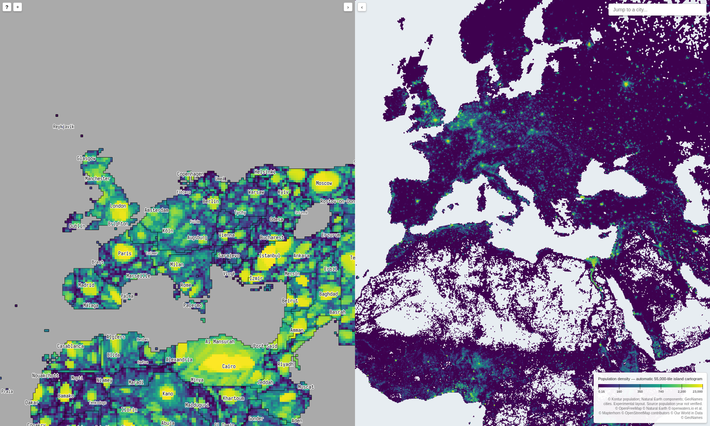

Open in local H3-MON · Layout gallery · Run summary · Arrow checks · Browser checks
The fit uses 481 island groups, not whole countries. All 7,954,677,990 matched people remain in their recorded group. Small components with no tile retain their explicit group assignment; they contain 10,133,200 people. Six groups needed one step of additional transport support within their own boundary. Maximum relative tile-population error within a group is below 0.01%.
Density is matched H3-5 population divided by actual cell area in square kilometres. The display uses population-weighted mean density. Colours show quantiles of cartogram density and can change with the visible extent. The population year is not verified.
City points match source polygons before transport. Of 12,341 places above 50,000 people, 12,154 have a matching component/H3 source. The other 187 are omitted, not moved to another island. Each of 9,202 labelled tiles shows its largest city. Labels appear as space permits.
These are screenshots from the real H3-MON app in headless Chromium. The geographic pane uses a neutral background without external base-map tiles. All four images were visually reviewed. The checks found no browser errors or failed requests.
The export keeps the selected layout unchanged. Internal density patterns show substantial distortion, especially in India. Canada and Korea still need shape work. This remains an experiment, not an approved replacement for OWID.

Tokyo and Osaka remain on Honshu. Sapporo remains on Hokkaido. Naha remains on Okinawa. Korea does not divide the main Japanese islands.

Jakarta is on Java, Denpasar is on Bali, and Makassar is on Sulawesi. Population does not move from Java to the other represented islands. The view covers western and central Indonesia.

London, Paris, Madrid, and Rome have distinct density peaks. Ireland remains separate from Great Britain. The northern country outlines remain strongly compressed.
